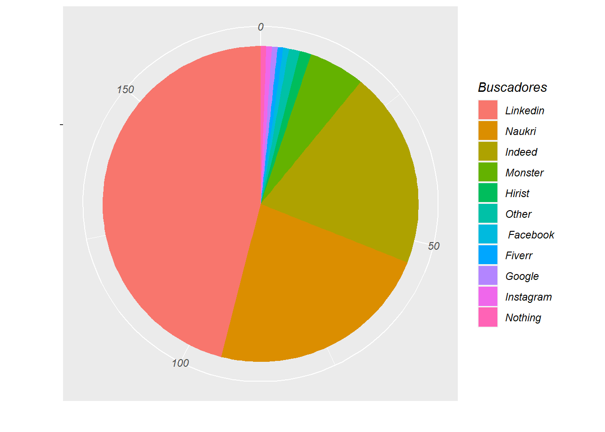
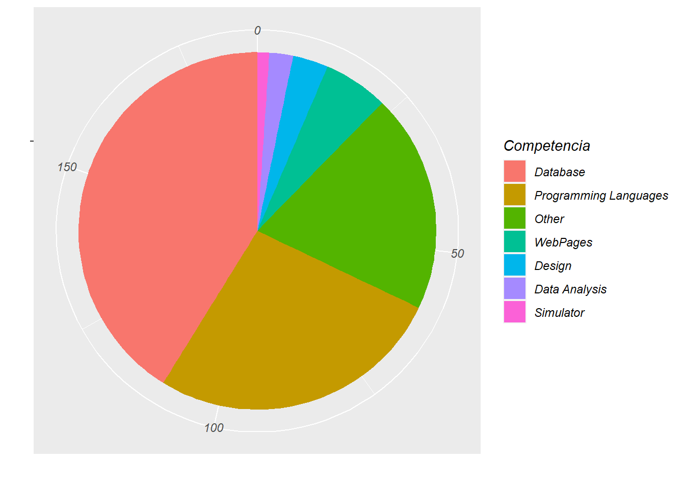
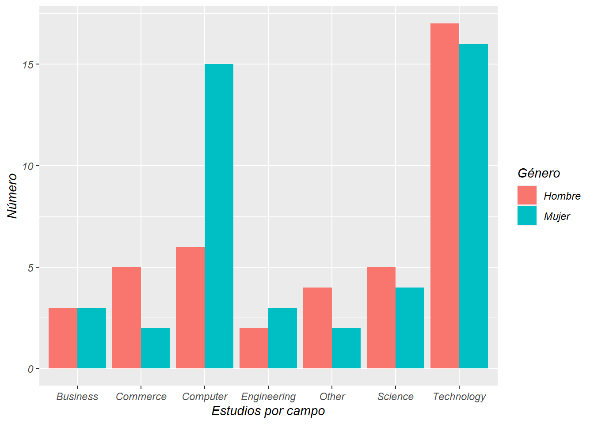
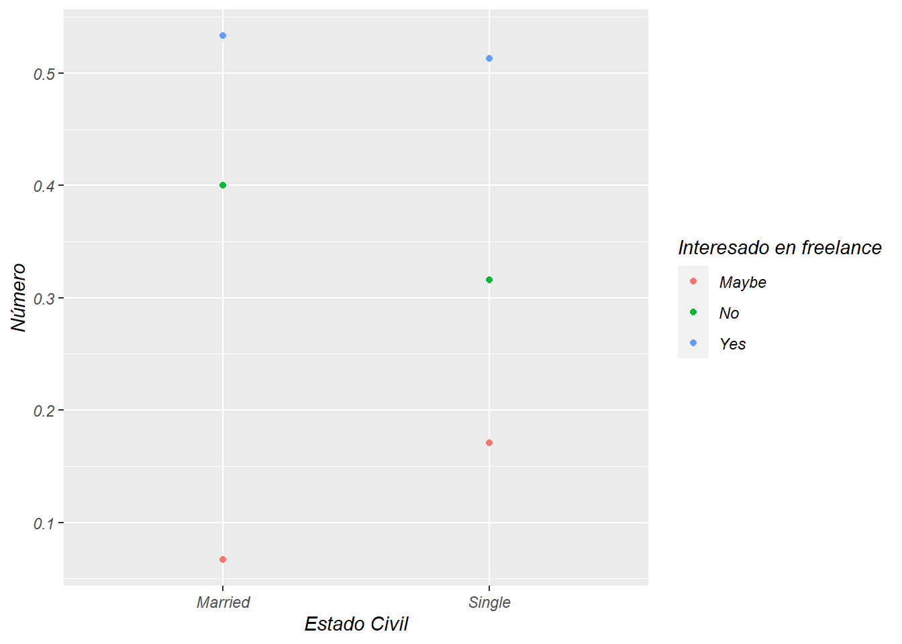
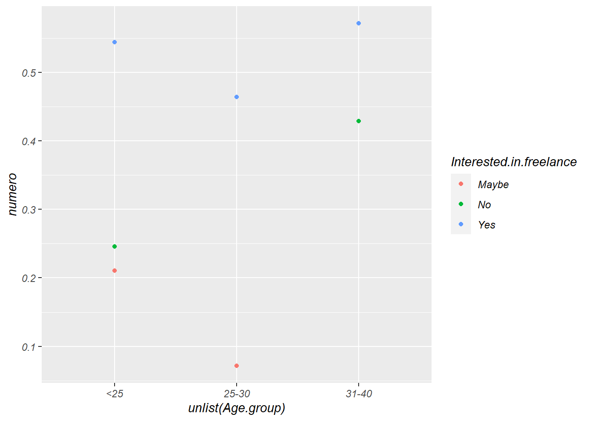
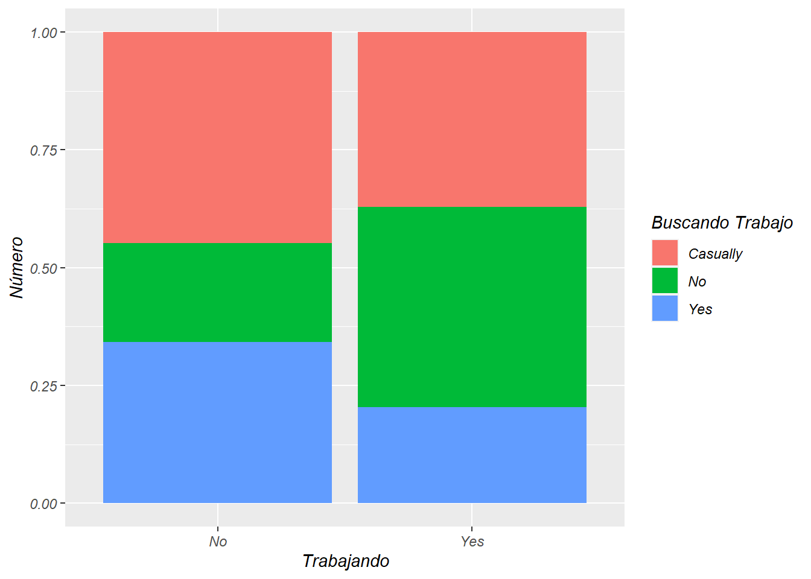
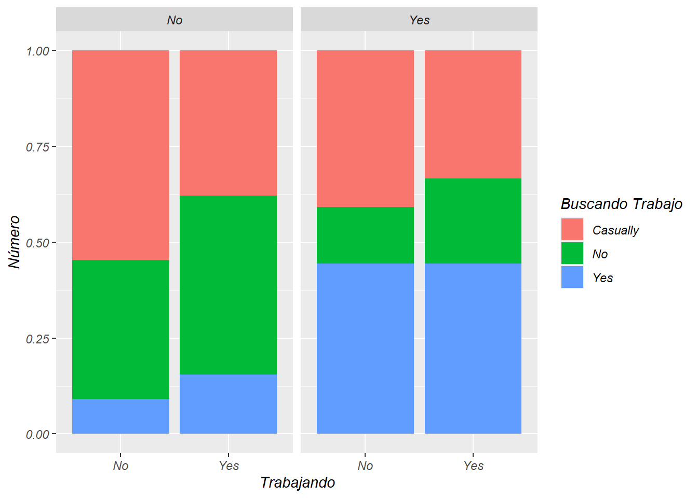

Capítulo 3 Análisis Y Visualización de Datos
Este capítulo se basa en preguntarse cosas sobre los datos e intentar sacar conclusiones pero meramente usando gráficos.
3.1 ¿Cuáles son las páginas más usadas para la búsqueda de empleo?
auxi <- table(unlist(Empleo$Job.finder))
auxi <- auxi[order(auxi,decreasing = TRUE)]
ggplot(as.data.frame(auxi), aes(x="", y=Freq, fill=Var1)) +
geom_bar(stat="identity", width=1) +
coord_polar("y", start=0) +
labs(fill = "Buscadores", x = " ", y = " ")
3.2 ¿Cuáles son las competencias que más tienen las personas encuestadas?
auxi <- table(unlist(Empleo$Skills))
auxi <- auxi[order(auxi,decreasing = TRUE)]
ggplot(as.data.frame(auxi), aes(x="", y=Freq, fill=Var1)) +
geom_bar(stat="identity", width=1) +
coord_polar("y", start=0) +
labs(fill = "Competencia", x = " ", y = " ")

3.3 ¿Hay diferencias entre lo que estudian los hombres y las mujeres?
auxi <- Empleo %>%
select(Gender,Studies.grouped.by.field) %>%
filter(Gender == "Male") %>%
group_by(Studies.grouped.by.field) %>%
summarise(Hombres=n()) %>%
arrange(Hombres)
auxi[[2]][which(auxi == "Art")] <- auxi[[2]][which(auxi == "Art")] +1
auxi[[2]][which(auxi == "Business")] <- auxi[[2]][which(auxi == "Business")] +1
auxi <- auxi[-1,]
auxi <- inner_join(auxi, (Empleo %>%
select(Gender,Studies.grouped.by.field) %>%
filter(Gender == "Female") %>%
group_by(Studies.grouped.by.field) %>%
summarise(Mujeres=n()) %>%
arrange(Mujeres))
, by = "Studies.grouped.by.field")
for (x in c(1:nrow(auxi))) {
auxi[nrow(auxi) + 1,] <- auxi %>% slice(x)
}
auxi <- auxi %>%
mutate(Sexo = if_else(row_number()<=7,"Hombre", "Mujer"))
for (x in c(((nrow(auxi)/2)+1):nrow(auxi) ) ) {
print(x)
auxi$Hombres[x] <- auxi$Mujeres[ (x - (nrow(auxi)/2) ) ]
}
auxi <- auxi %>%
select(-3) %>%
rename( "Contar" = Hombres)
ggplot(auxi, aes(x=unlist(Studies.grouped.by.field), y=Contar, fill = Sexo )) +
geom_bar( stat='identity',position='dodge') +
labs( fill = "Género", x = "Estudios por campo", y = "Número")
No hay mucha disparidad entre elecciones de campo de estudios por género, hay que decir también que estos datos son “de juguete” pueden estar más que perfectamente sesgados o simplemente ser tan pequeños que no muestran nada. Únicamente mencionar que hay muchas más mujeres que hombres con estudios relacionados con la informática
3.4 Marital Status and interested in freelance
auxi <- Empleo %>%
select(Marital.status, Interested.in.freelance) %>%
group_by(Marital.status, Interested.in.freelance) %>%
summarise( numero = n())
auxi[[3]][which(auxi$Marital.status == "Married")] =
(auxi[[3]][which(auxi$Marital.status == "Married")])/sum(auxi[[3]][which(auxi$Marital.status == "Married")])
auxi[[3]][which(auxi$Marital.status == "Single")] =
(auxi[[3]][which(auxi$Marital.status == "Single")])/sum(auxi[[3]][which(auxi$Marital.status == "Single")])
auxi <- auxi[-4,]
ggplot(auxi, aes(x = unlist(Marital.status), y = numero, colour = Interested.in.freelance)) +
geom_point() +
labs( color = "Interesado en freelance", x = "Estado Civil", y = "Número")
Tampoco hay diferencias muy reseñables aunque sí que es cierto que, ligeramente, hay mayor porcentaje de personas casadas que están seguras de que no quieren ser freelance y, por el contrario, hay más personas solteras que están pensando si hacerlo.
3.5 Age and freelance
auxi <- Empleo %>%
select(Age.group, Interested.in.freelance) %>%
group_by(Age.group, Interested.in.freelance) %>%
summarise( numero = n())
auxi[[3]][which(auxi$Age.group == "<25")] =
(auxi[[3]][which(auxi$Age.group == "<25")])/sum(auxi[[3]][which(auxi$Age.group == "<25")])
auxi[[3]][which(auxi$Age.group == "25-30")] =
(auxi[[3]][which(auxi$Age.group == "25-30")])/sum(auxi[[3]][which(auxi$Age.group == "25-30")])
auxi[[3]][which(auxi$Age.group == "31-40")] =
(auxi[[3]][which(auxi$Age.group == "31-40")])/sum(auxi[[3]][which(auxi$Age.group == "31-40")])
ggplot(auxi, aes(x = unlist(Age.group), y = numero, colour = Interested.in.freelance)) +
geom_point()
Aquí ya sí podemos notar cierta separación que coincide más o menos con los datos esperados. Los más jóvenes son los más proclives a ser freelances (diferencia entre “Yes” y “No” mayor) Los de 25-30 años tienen tanto el mísmo interés en serlo como en no serlo y los de 31-40 sorprendentemente tienen el porcentaje más alto de personas que quieren ser freelancers con casi un 60%
3.6 “Gente que trabaja está contenta con su trabajo”
Entre comillas por qué vamos a buscar cuánta gente está en un trabajo y no busca otro.
auxi <- Empleo %>%
select(Currently.employed,Applying.4.job) %>%
group_by(Currently.employed,Applying.4.job) %>%
summarise( numero = n())
auxi[[3]][which(auxi$Currently.employed == "No")] =
(auxi[[3]][which(auxi$Currently.employed == "No")])/sum(auxi[[3]][which(auxi$Currently.employed == "No")])
auxi[[3]][which(auxi$Currently.employed == "Yes")] =
(auxi[[3]][which(auxi$Currently.employed == "Yes")])/sum(auxi[[3]][which(auxi$Currently.employed == "Yes")])
ggplot(auxi, aes(x = unlist(Currently.employed), y = numero, fill = Applying.4.job)) +
geom_bar( stat='identity') +
labs( fill = "Buscando Trabajo", x = "Trabajando", y = "Número")
Empezando por abajo (Yes,No,Casually) es normal que gente que no tenga trabajo busque más que los que si tienen y viceversa con “No” pero vemos que hay un alto porcentaje de personas que no tienen trabajo y casualmente tampoco buscan ¿Estarán estudiando?
auxi <- Empleo %>%
select(Currently.employed,Applying.4.job, Still.Studying) %>%
group_by(Currently.employed,Applying.4.job,Still.Studying) %>%
summarise( numero = n())
auxi[[4]][which(auxi$Currently.employed == "No" & auxi$Still.Studying == "No")] =
(auxi[[4]][which(auxi$Currently.employed == "No" & auxi$Still.Studying == "No")])/sum(auxi[[4]][which(auxi$Currently.employed == "No" & auxi$Still.Studying == "No")])
auxi[[4]][which(auxi$Currently.employed == "No" & auxi$Still.Studying == "Yes")] =
(auxi[[4]][which(auxi$Currently.employed == "No" & auxi$Still.Studying == "Yes")])/sum(auxi[[4]][which(auxi$Currently.employed == "No" & auxi$Still.Studying == "Yes")])
auxi[[4]][which(auxi$Currently.employed == "Yes" & auxi$Still.Studying == "No")] =
(auxi[[4]][which(auxi$Currently.employed == "Yes" & auxi$Still.Studying == "No")])/sum(auxi[[4]][which(auxi$Currently.employed == "Yes" & auxi$Still.Studying == "No")])
auxi[[4]][which(auxi$Currently.employed == "Yes" & auxi$Still.Studying == "Yes")] =
(auxi[[4]][which(auxi$Currently.employed == "Yes" & auxi$Still.Studying == "Yes")])/sum(auxi[[4]][which(auxi$Currently.employed == "Yes" & auxi$Still.Studying == "Yes")])
ggplot(auxi, aes(x = unlist(Currently.employed), y = numero, fill = Applying.4.job)) +
geom_bar( stat='identity') +
facet_grid(.~Still.Studying) +
labs( fill = "Buscando Trabajo", x = "Trabajando", y = "Número")3.7 ¿Cuáles son las competencias que más tienen las personas encuestadas?
auxi <- table(unlist(Empleo$Skills))
auxi <- auxi[order(auxi,decreasing = TRUE)]
ggplot(as.data.frame(auxi), aes(x="", y=Freq, fill=Var1)) +
geom_bar(stat="identity", width=1) +
coord_polar("y", start=0) +
labs(fill = "Competencia", x = " ", y = " ")

Vemos que debe haber otro factor porque, por ejemplo, las personas que no trabajan y no estudian, ¿Cómo es posible que estén buscando empleo de forma “Casually”? Luego en “No trabajando” y “Sí estudiando” los datos son “normales” “Sí trabajando” y “No estudiando” es lo que no hemos podido determinar pero podría ser que no estuvieran conformes con su trabajo Por último, “Sí trabajando” y “Sí estudiando” se podría explicar debido a que estén de prácticas empresariales, por ejemplo.